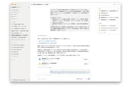
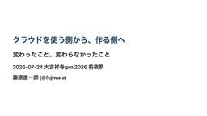

はてなブックマーク - 人気エントリー - テクノロジー
フィード

自宅でローカルなテレビ局を開局してみた 【地上デジタル放送の仕組みに迫る】 - Qiita 116
116
はてなブックマーク - 人気エントリー - テクノロジー
はじめに 地上デジタル放送のテレビ局が送出しているものは、突き詰めると「MPEG-TS ストリーム」と「その中に埋め込まれた PSI/SI テーブル」の2つに集約される。 であれば、同じ構造のストリームを自前で組み立てれば、市販のテレビ録画ソフトがそれを "本物のチャンネル" として認識するのではないか —— そう思い立ち...
7時間前

ターミナルを自作したら、1日のコミット数が500を超えて、生産性がバグった話 110
はてなブックマーク - 人気エントリー - テクノロジー
僕は長いこと、ターミナルの中で暮らしています。エディタは emacs、VS Code や GUI 系のツールはどうにも手に馴染まない。Web 上の開発環境も、あの「ちょっとした不便」が積もって結局使わなくなる。要するに、ターミナルに慣れ親しみすぎて、GUI のボタンがどこにあるのか探せない人間です。 そんな僕が、勢いで自分...
12時間前
クソツイをしたらTwitter（自称X）が突然「日本国内非公開」になった話｜こぶだし 277
はてなブックマーク - 人気エントリー - テクノロジー
※2026年7月現在で未解決です。 最後まで読んでも解決はしていませんのであしからず。 こんにちは。こぶだしという者です。 普段はインターネットでお絵かきをしたり、漫画を描いたりしています。 私のSNSをウォッチしている方は既にご存知かもしませんが ある日突然、Twitter（自称X）から あなたのアカウントは日本国内...
13時間前
AI時代におけるテストの基礎の再定義 / Rethinking the Fundamentals of Testing in the AI Era 71
はてなブックマーク - 人気エントリー - テクノロジー
AI時代到来です。 AIの台頭によって「このままテストをやっていて大丈夫なのか」「学んできたテスト技術は通用し続けるのか」と不安を感じているテストエンジニアも多いのではないでしょうか。 この講演では、AIを過度に恐れず、かといって過信もしないために、テストエンジニアとして押さえておきたい考え方を整理…
7時間前
【Claude Code活用特集】あの会社で一番使われてるSkillsは？Claude Codeの利用Skills Top5を大公開！ | Findy AI+ 116
はてなブックマーク - 人気エントリー - テクノロジー
本特集では、Claude Code活用を積極的に進める株式会社ダイニー、ディップ株式会社、株式会社LayerX、株式会社タイミーの4社に、社内でよく使われている Claude Code の Skills トップ5を公開いただきました。 どの企業もレビュー・QA・分析スキルが使われやすい傾向に 4社の回答結果を分析すると、共通した傾向が見えて...
17時間前
性的表現に誤タップ誘導――ネットの“不快な広告”への苦情が1年で2倍に 件数も過去最多 82
はてなブックマーク - 人気エントリー - テクノロジー
日本広告審査機構（JARO）は7月23日、2025年度に受け付けた広告への苦情が、24年度の約1.5倍となる1万2589件だったと発表した。設立以来最多で、コロナ禍の20年度（1万1560件）を上回った。媒体別では、インターネット広告への苦情が24年度の約1.7倍となる7664件に急増し、初めて全体の6割を占めた。称賛や照会などを含...
12時間前

スーパーに並んだ「ごちゃごちゃ生成AIポップ」が物議 “看板王”こと、きぬた歯科院長「これはアリ」
はてなブックマーク - 人気エントリー - テクノロジー
「見づらいだけ」――スーパーの商品売り場に並ぶ、生成AIで作ったとみられる派手なポップがXで物議を醸している。Xのユーザーからは「ごちゃついている」「食欲が湧かない」など否定的な声が集まる中、看板広告戦略で知られるきぬた歯科（東京都八王子市）のきぬた泰和院長は7月23日、「これはアリ、なんです」と肯定的な...
6時間前

みんな使っている「ChatGPT Work」だけど、いまひとつピンときていない人へ アクティブユーザー数が1,000万人突破した「ChatGPT Work」とは 73
はてなブックマーク - 人気エントリー - テクノロジー
13時間前
「定休日にも予約取れそう」話題になっているAI予約システム「オートリザーブ」だが、店舗で拒否されてる事例が出ていて問題視する反応が集まる 80
はてなブックマーク - 人気エントリー - テクノロジー
AutoReserve[オートリザーブ] | AIによるレストラン予約サイト 予約可能レストラン数No.1なら、AutoReserve。AIが世界中の飲食店の予約を行います。当サイトでしか予約できないレストラン情報やお店の写真、口コミなど豊富に取り揃えております。 7 users 111 autoreserve.com
12時間前
ほぼ全部入りの「Linux」向け無料セキュリティスイート「BastionGuard」 34
はてなブックマーク - 人気エントリー - テクノロジー
筆者は「Linux」を30年近く使ってきて、セキュリティ侵害を経験したことが一度だけある。あれは、設定に不備があるサーバーをルートキット付きで引き継いだときのことだった。あのような経験は二度としたくない。 そのような経緯もあって、筆者はさらに堅固なセキュリティの構築を目指して、より良い方法、特にエンドユ...
9時間前

「Chromium」の画像デコードをRustに ～脆弱性削減、処理時間も最大50％短縮／Microsoftらの取り組み。PNGでの成果をBMPにも適用、ICO/JPEGでも進行中 10
はてなブックマーク - 人気エントリー - テクノロジー
10時間前
「君の知らない物語」を見つける技術 - プププなテクブ
はてなブックマーク - 人気エントリー - テクノロジー
このエントリは『TSKaigi Mashup Kansai #2 TSKaigi 2026を振り返ろう！』での登壇資料です。 当日の資料はこちらです。 slide.inorinrinrin.com このエントリは『TSKaigi Mashup Kansai #2 TSKaigi 2026を振り返ろう！』でお話しした内容を文字起こししているものです。 はじめに いつも通りのある日のこと mizdraさん...
5時間前
「X」（Twitter）プロフィールでポスト・リポストが分離……以前の仕様を再現したい！／リスト機能を活用した冴えたやり方【やじうまの杜】 16
はてなブックマーク - 人気エントリー - テクノロジー
13時間前
総務省、Google・Xなど5社に勧告 誹謗中傷対策の報告義務を怠る 情プラ法違反で 40
はてなブックマーク - 人気エントリー - テクノロジー
総務省は7月24日、情報流通プラットフォーム対処法（情プラ法）第28条に定める公表義務に違反したとして、米Google、米X、米Meta、湘南西武ホーム、ドワンゴの5事業者に対し、勧告と報告徴収を実施したと発表した。5社には8月31日までに、違反箇所を修正した資料の再公表を求めている。 情プラ法第28条は、利用者に対す...
10時間前
2026年のソフトウェア開発を考える（2026/07版） / Agentic Software Engineering 2026-07 Findy Edition 258
はてなブックマーク - 人気エントリー - テクノロジー
Jul 23, 2026 @ 2026年のソフトウェア開発を考える（2026/07版） AI DevEx Conference 2026 2026年7月23日（木） https://dev-productivity-con.findy-code.io/aidevex2026
19時間前
ウクライナがドローン攻撃、「ロシアのアマゾン」倉庫で火災 11
はてなブックマーク - 人気エントリー - テクノロジー
ロシア通販大手ワイルドベリーズのロゴ（2021年3月24日撮影）。(c)Kirill KUDRYAVTSEV / AFP) 【7月24日 AFP】ロシア当局とAFPの記者によると、24日未明にサンクトペテルブルク市近郊にあるロシア通販大手ワイルドベリーズの倉庫にウクライナの無人機（ドローン）が着弾して火災が発生し、歴史ある同都市の上空には煙が...
10時間前

クラウドを使う側から、作る側へ / 大吉祥寺.pm 2026前夜祭
はてなブックマーク - 人気エントリー - テクノロジー
大吉祥寺.pm 2026 前夜祭 https://fortee.jp/dai-kichijojipm-2026 Links: - https://github.com/kayac/ecspresso - https://github.com/fujiwara/lambroll - ht…
6時間前

Go 1.27 から uuid 実装がサポートされる！ので個人的に気になった議論とその着地をまとめてみた 7
はてなブックマーク - 人気エントリー - テクノロジー
Go 1.27 から uuid 実装がサポートされる！ので個人的に気になった議論とその着地をまとめてみた はじめに こんにちは、バクラク事業部アカウント基盤開発部IDチームの @convto です。各種利用サービスのIDに一貫性があり、 GitHub も X も大体 convto を確保できているのが密かな自慢です。やはりIDチーム所属なので、...
17時間前
【Playwright 】Claude Code × Playwright MCPでPageObjectの自動生成を試してみた
はてなブックマーク - 人気エントリー - テクノロジー
冒頭には自分に起きた時事ネタを書くことが多いです。 実は・・・ついにClaudeに課金しました（笑 なので、元を取る使い倒すという意味で、ここからの記事はClaudeを使用したものが多くなりそうです。 と雑談？はこのあたりにして、方向修正をしましょう（笑 さて、Playwrightは優秀です。 PlaywrightはUIがあり非エンジ...
18時間前

Claude の利用状況を OpenTelemetry Collector で BigQuery に流し込んで可視化できるようにした - VISASQ Dev Blog 14
はてなブックマーク - 人気エントリー - テクノロジー
🤖 AI執筆について この記事は AI（Claude）が執筆し、筆者が修正・加筆を行なっています。 はじめに こんにちは！インフラチームの高畑です。 最近あまりにも暑すぎますね、まだ 7 月ですよ？この調子で気温が上がっていったら 8 月には溶けて無くなりそうな予感がしています。 皆さんも溶けてしまわないように体調には...
3日前

実装前に品質を上げるために始めた「QAとの事前打ち合わせ」 8
はてなブックマーク - 人気エントリー - テクノロジー
はじめに この記事は Dress Code Advent Calendar 2026/07 の 17日目の記事です。 こんにちは。DRESS CODE 株式会社でプロダクトエンジニアをしている西銘です。 DRESS CODE の開発では、PdM が機能チケットを作成し、そこに記載された仕様をもとに開発者が実装するフローが一般的です（チケットの粒度は、画面デザイン...
1日前
Castle Map — Explore 3,708 Castles, Fortresses & Palaces Worldwide 4
はてなブックマーク - 人気エントリー - テクノロジー
The interactive map of the world's castles & fortresses Castlemap is a free interactive map of 3,734 of the world's greatest castles, fortresses and palaces across 131 countries. Pan and zoom the night map above, click any point for a photo and quick facts, or open a landmark's page for its full ...
2日前
advanced-context-engineering-for-coding-agents/wsff.md at main · humanlayer/advanced-context-engineering-for-coding-agents 13
はてなブックマーク - 人気エントリー - テクノロジー
You signed in with another tab or window. Reload to refresh your session. You signed out in another tab or window. Reload to refresh your session. You switched accounts on another tab or window. Reload to refresh your session. Dismiss alert
20時間前